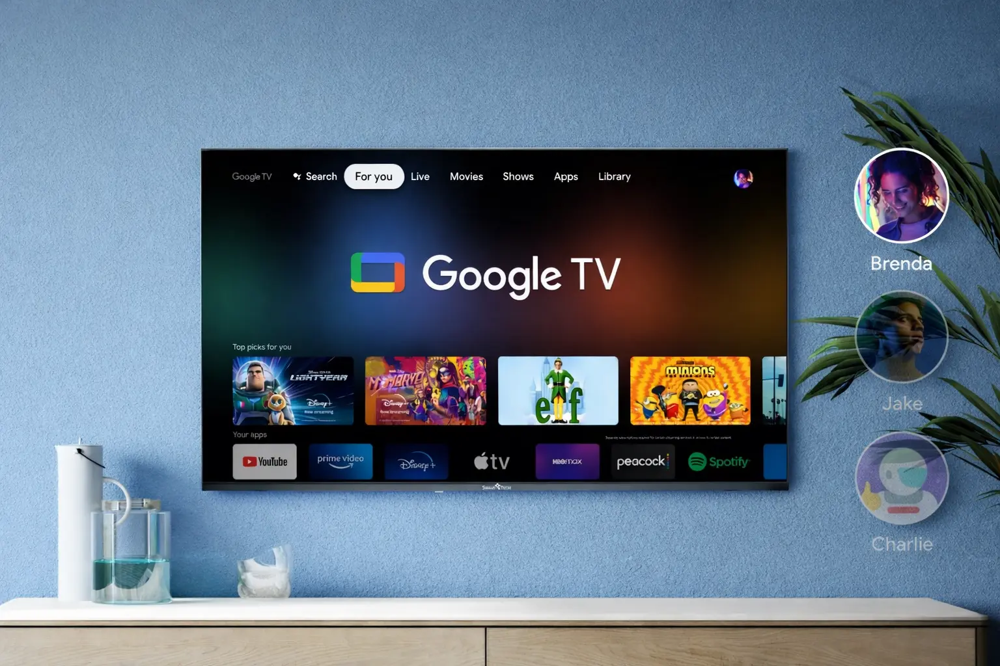

Google TV vs webOS TV: a friendly face-off that actually matters
Buying a new TV feels simple at first. Then the screen lights up in the store, menus start moving, and suddenly the software running that TV feels more important than the panel itself. I have been there, standing too close to the screen, pretending I understand everything, while secretly thinking why one menu feels smarter than the other.
The short answer comes early. According to me, Google TV wins this comparison, and it wins in a calm, practical way. It feels more helpful, more aware of what people actually watch, and more flexible once you live with it every day.
This comparison is not about tearing anything down. Both platforms are good. Still, one feels more natural once the excitement of a new TV fades, and that is where Google TV quietly steps ahead.
Understanding the philosophy behind both systems
Before talking about buttons, apps, or menus, it helps to understand how both systems think. Google TV comes from Google, a company known for search and suggestions. That background shows up the moment the TV turns on.
The system focuses on helping users find something to watch, even when they have no idea what they want. It feels like the TV understands hesitation, which is more common than people admit.
webOS TV is closely linked to LG and its focus on hardware smoothness. The interface feels polished and comfortable, like a well-arranged living room where everything has its place.
However, philosophy shapes daily use. Google TV assumes people are tired after a long day. So it places content right in front of them. webOS TV stays neutral and waits for instructions.
At first, both feel fine. After a few weeks, Google TV starts saving mental effort. webOS TV stays responsive, but Google TV feels more supportive.
Interface and daily navigation experience
Living with a TV system means repeating the same actions daily. Google TV understands this routine well. Its home screen focuses on shows and movies instead of app icons.
When using Google TV, less time is spent jumping between services. Content appears together, even when it comes from different platforms. That saves time without being obvious.
webOS TV offers a clean layout with smooth motion. It looks friendly and runs fast, especially when opening popular platforms like filmapp.io. Still, it often feels more like a simple launcher than a true viewing guide that helps decide what to watch next.
Google TV reduces repeated steps. It brings content forward and keeps apps in the background. According to me, this matches how people actually watch TV.
The layout also feels familiar across brands. That consistency helps users adjust quickly, even when switching TVs.
Content discovery and recommendations that actually help
Content discovery is now the heart of the TV experience. Google TV treats it as a priority, and it shows in daily use.
Recommendations feel personal without being awkward. Shows appear that match past viewing habits, with occasional surprises that still make sense.
webOS TV also offers suggestions, but they feel more general. Popular titles appear often, even when they do not match personal taste.
Google TV remembers unfinished content and places it clearly on the home screen. That small detail saves frustration and time.
Over time, this gentle guidance feels more helpful than generic suggestions.
Voice control and smart assistance in real life
Voice control only matters if it works smoothly. Google TV benefits from Google Assistant integration, which makes voice searches feel natural.
Users can ask for genres, specific shows, or even casual suggestions. The system understands intent well and responds quickly.
webOS TV includes voice features, and they work fine for basic tasks. Still, deeper searches often feel limited.
Google TV also works well with other smart devices. That consistency reduces confusion and makes daily use easier.
App support and long-term flexibility
Both platforms support major streaming apps, so basics are covered. Still, Google TV feels more open over time.
App updates arrive regularly, and new services appear faster. Developers often prioritize Google TV due to its wider reach.
webOS TV stays stable and smooth, which many users like. However, its app store feels more controlled.
Google TV allows more customization while staying organized. That balance helps users shape the experience without confusion.
Performance, updates, and future comfort
Performance depends on hardware, but software matters too. Google TV runs well across different price ranges.
Updates arrive consistently and improve stability quietly. New features appear without forcing changes.
webOS TV also runs smoothly, especially on LG TVs. Still, updates often focus more on maintenance.
Google TV feels prepared for long-term use, which matters for a device meant to stay for years.
Final thoughts from a couch-side view
webOS TV is pleasant, fast, and respectful. It does its job without getting in the way.
Still, Google TV feels more aware of real viewing habits. It saves time, reduces effort, and feels smarter without trying too hard.
According to me, that is why Google TV wins this comparison. When a TV helps instead of distracts, the experience stays enjoyable for the long run.